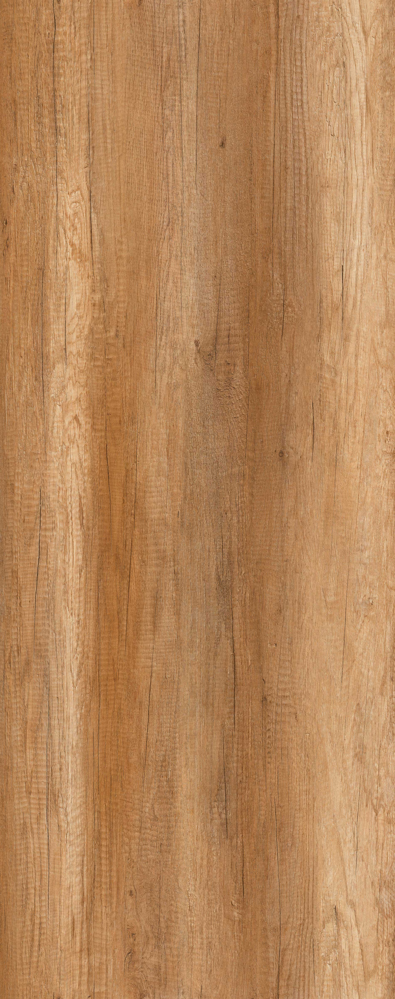

Canyon Monument Oak
The rustic and stripy structure is typical for this decor. Lots of small rifts and cracks and some less knots can be found. Slight saw-cuts are indicated. The wood texture seems to be raw and without treatment, the wood pores are clear.
Decor No : 14-10347-001 (Best seller - available in 4 & 6 ft both)
Decor No : 14-10347-102 (available in 4 ft only)
Decor No : 14-10347-103 (Best seller - available in 4 & 6 ft both)
